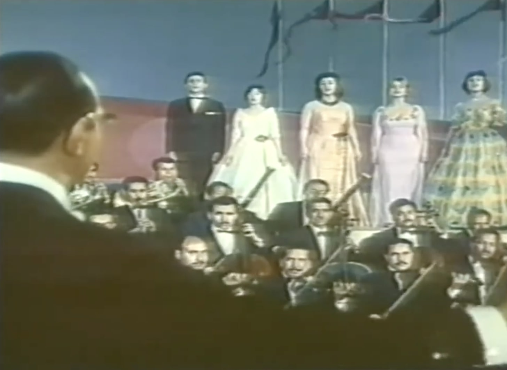

A performance scene from the Nasser-era propaganda operettas
Reconstituting Identities: Performing Propaganda 1958-1965
This essay was originally published in ArteEast quarterly, Winter 2014
by Ismail Fayed
There is a certain weariness among Egyptians living now under the rule of a complicit and corrupt military regime. A survey of recent social media and online platforms reveals that attempts at "propaganda" are commonly judged to be somewhere between "pitiful" and "disgusting", and inspire an intense negative emotional and intellectual reaction. Some even went so far as to dismiss the use of the word "propaganda" altogether from such incompetent and sloppy campaigns to influence public opinion.
One such example that has been going viral on all social media platform is the group song, 'Teslem El-Ayadi' (Praised be Those Hands) released in 2013 for the annual commemoration of the 1973 Arab–Israeli War that marked early decisive victory for the Egyptian army over Israel following the resounding defeat of the 1967 War. The song was dedicated to the Egyptian army and its Commander-in-Chief General Abdel Fattah Al-Sisi (b. 1954), the de facto ruler of the country now.
The song was written and composed by Mostafa Kamel, the current head of the Musicians' Syndicate, who was accused of plagiarising both the melody and the lyrics of the song from previous works by other composers and musicians. The music video shows the singers recording the song in a studio, interspersed with edited footage of contemporary military operations along with several appearances of General Al-Sisi. The singers, eleven in total, varied from established singer from the 1990s all the way to recent celebrities such Bosy and Sooma. With a rare appearance of the Samir Al-Iskandarni (b. 1938) the spy-turned singer.
The video received accusations of being redundant and plagiarising the original song. It also gave the impression of being poorly produced and lacked the very essential elements of what would constitute a 'propagandistic performance', even as it went viral among many Egyptians (it boasts 3,964,423 views on YouTube at the time of writing this article.)
A tracing of the historical use of the term itself, 'propaganda', might shed some light on why the current regime with its 'court-jesters' are "unworthy" of the term and why so many keep citing the early years of the post-1952 military regime as the apogee of 'propagandistic campaigning' in Egypt and the Arabic Speaking Region.
The word was originally used to designate that which should be 'propagated', in the biological sense. It later acquired a more 'authoritarian' sound, when it was used as 'propagating faith' by the Catholic church. Faith being something worthy and "natural" to spread and persuade others to embrace. It was in the newly founded America, that the term acquired its political undertones, when secret societies (funnily enough the Illuminati) and their tactics were described as 'propagandist'.
It was not till the First World War that the sense of an organized and large scale campaign to 'propagate' a certain idea and influence public opinion became the standard meaning of the word. It was then the earliest forms of advertising and political campaigning in America that later attracted the attention of the Nazis and their regime, elevating the term to a 'science', rather than just campaigning to influence, and it transformed into being a method of "constructing" public opinion, not just to persuade, but rather to "indoctrinate", bringing the term closer to its Catholic "origin".
The concept and its tactics arrived in Egypt as early as 1952. The year marks the beginning of the long reign of the military and its hijacking of the state and its institutions. Therefore the nascent established military regime decided to create a new structure to "guide" the people. The ministry of National Guidance (the name itself ominous enough to inspire anxiety about mass manipulation) was formed, later changed into the Ministry of Culture and National Guidance (1958-1965). The new institution was headed for its first two decades or more by members of the military. Its first minister Tharwat Okasha (1921-2012) was a military officer who served as a military attaché in several European countries before changing his career and studying literature at the Sorbonne. Okasha was famous for his books on European art. He is remembered for that today, rather than for his tenure at the ministry where he was the architect of all state media planning and program.
But why is the ministry of National Guidance a more worthy entity of the term "propaganda" than its later "pitiful" successor? What exactly did the ministry "produce" that created a certain set of references, which when compared with our current "campaigns", reactions such as "disgusting" or "pitiful" arise?
The importance of this institution and what it did, perhaps lies in the fact, that the first broadcast of national TV happened during the tenure of Okasha and his new ministry. It took place on 21 July 1960 and the highlight was a filmed version of 'Al-Watan Al-Akbar' (The Greatest Homeland). Mohammed Abdel Wahab (1902-1991) composed this famous operetta and the libretto was written by renowned lyricist Ahmed Shafik Kamel (1929-2008).
It was sung by the leading singers of the time, Abdel Halim Hafez (1929-1977), Sabah (1927 – ), Nagat (1938 – ), Shadia (1934 – ), Fayda Kamel (1932 – 2011) and Warda (1939-2012) and many consider it to be the national anthem for Arab Nationalism as advocated by president Gamal Abdel Nasser (1918-1970).
The operetta shows the typical elements of a propagandistic performance in its scale, composition, lyrics, and even "choreography". In its visual display we can see how the state deployed its resources to communicate a certain experience, that of the new liberated Arab states that managed to break the yoke of colonialism and is instituting a reign of peace and prosperity. The song can be compared to the similar propagandistic performances like the East is Red, in China or Moscow Nights in the Soviet Union around the same time. Such performances primarily aim at creating a certain "identity" to which all spectators strive to be and become. The authoritarian regime of Nasser understood propaganda in its true meaning and spectacular form. By listening to the song and watching its 'performance' citizens get to experience and assimilate what the 'ideals' that are worth 'propagating' are. This becomes very clear through the element of 'spectacular performance': hundreds of young women and men, marching back and forth across bridges that connect 'different peoples' and 'different states', hundreds of soldiers march across the background with their arms, while hundreds of other students, males and females march carrying flags of Arab states, with a full orchestra and choir adding another visual and sonoric layer. The dramaturgy of all those constituent elements and how they are composed is the manifestation of the performance of power and control by the state (staging such massive spectacle), the performance of service and obedience (hundreds of performers and scores of artists "willing" to participate), the monopoly of symbols (flags, idioms, costumes,….etc) and how and why they are used in certain ways.
If we trace how and why this becomes "propaganda", we find that it was transposed from the level of the spectacular to the level of the embodied: it became the music that students marched to everyday in schools in their morning lines and marches (embodying the military marches and saluting the flag in Egypt have been school habits that most public schools in Egypt continue to subject students to), it became the song people sung on the streets, it became the way inhabitants of the region related to each other. It moved from the realm of the theatrical to the realm of the lived. It is precisely at that point when it becomes 'internalized', when it becomes a physical experience that is constantly re-enacted, that it becomes 'political'. 'Political' here in the sense of the power to control beyond the individual wills of the people. Even when the method used does not involve conventional mean of mobilization or control.
The issue of control through propaganda was effectively mastered by the early Nasser regime and his ministry of "National Guidance". In that same year another operetta was composed and filmed, Al-Geel Al-Saad (The Rising Generation). It was composed again by Abdel Wahab, performed by almost the same cast, with the addition of Abdel Wahab himself singing and Fayza Ahmed (1930-1983) and the absence of Sabah and Fayda Kamel. The libretto was written by Hussein Al-Sayyid (1916-1983).
The message is more direct in this piece, as the song divides society into "acceptable" categories: the solider, the student, the peasant, the worker, and the artist. And we get to see 'representations' of those groups as the song starts with throngs of men and women in uniform marching, then students, then peasants, then college students, each introduced with a pharaonic-like tablet with a special insignia etched on it, indicating which group it is. Each singer represents one of these categories. And as they sing, hundreds of extras march on the side of the colossal set wearing the relevant costume. As each singer starts singing, a screen is projected on "representing" what the group she is singing about does. Each singer then ends her solo with the thundering 'long live the generation of our revolution'. Predictably the song begins and ends with the soldiers. The highlight of the song is Abdel Wahab singing at the very end, mentioning Gamal Abdel Nasser by name- at the end of every single line he sings in that stanza- and then adds: 'sing with me, long live Abdel Nasser'.
The totalitarian aspect of the military regime is more evident in this performance than the other one. We see the performance of total control over how and what society is and what it can do. This is manifested in "acceptable" categories and their relevant identities. Those identities are not only visually presented in a particular way, but also relegated to specific actions and 'labour'. The theatricalization of 'progress', 'order', 'unity', through the fixed costumes, the disciplined choreography, the screen projections of accomplishments, the roaring voices of the choir, overwhelm the audience, visually and sonically, as to what should be 'progress', 'order', and 'unity'. The directness of the message is counterbalanced by an even grander spectacle than the other one. The dramaturgy used here is exaggeration. Where each one of these notions are 'performed' to a Utopian form: the soldiers that liberate long oppressed countries, the workers that wield metal with the power of light and fire, and the students that master the power of science to vanquish darkness, the artists that construct a civilisation that is manifested in a picture, poem, in a song – all of this effectively pulling the spectator into this quest for 'glory' that Nasser has promised.
Both songs were aired in 1960 and emblematise the acme of Egyptian propaganda and how it can be understood as a performance of abstracted ideals. The years when Nasser and his regime aggressively used propaganda to socially engineer a new society and a new identity can perhaps be understood through discourse analysis and institutional examination as much as they can be understood through the performances of propaganda, and performative strategies. This can be seen in clear contrast to the contemporary attempts by the current regime to create "propagandistic performances", such as Teslem Al-Ayadi, that only reflect the mediocrity and actual decay of the state. There are no lofty ideals or grandeur in their quest, there is only the desperate attempt for complacency and safeguarding corrupt and inefficient order.
The campaigns inspired by the army now not only reflect the poverty of thought, the fallen Ministry of Culture and the lack of resources, but they also fail to understand the historical meaning of propaganda: a dogmatic ideal about the world, pursued with obsessive and authoritarian fashion, executed with extraordinary discipline and stunning showmanship. The recent attempts are unhappy manifestations of institutional decay going all the way from the army to the Musicians Syndicate and the Music Academy. They become the performance of state disintegration and neoliberal atrophy, that slowly liquidates the substance of the state leaving an empty, hollow shell of a crumbling bureaucracy, and a faint shadow of Nasser's time and dream, with the few obsolete edifices (such as the Ministry of Culture) looming overhead. As authoritarian and tyrannical as it was, Nasser's regime managed to consolidate all the achievements of its preceding regime and consolidate it into a formidable propaganda-making machine, the performance of which effectively created an identity for an entire region.
References
[1] "Teslem Al-Ayadi"… A stolen song or "something good" we fight against?, Mohamed Ramadan, Shorouk News Paper, published Tuesday 24 September 2013
[2] Erwin W. Fellows, 'Propaganda:' History of a Word, American Speech, Vol. 34, No. 3 (Oct., 1959), pp. 182-189
[3] The song is quite associated with Nasser and his time to the degree where the website created by his foundation and the Bibliotheca Alexandrina, lists the song among "his songs".
[4] Leyla Dakhli, Arabisme, nationalisme arabe et identifications transnationales arabes au 20e siècle, Vingtième Siècle. Revue d'histoire, No. 103, Proche-Orient: foyers, frontières etfractures (Jul. – Sep., 2009), pp. 13-25